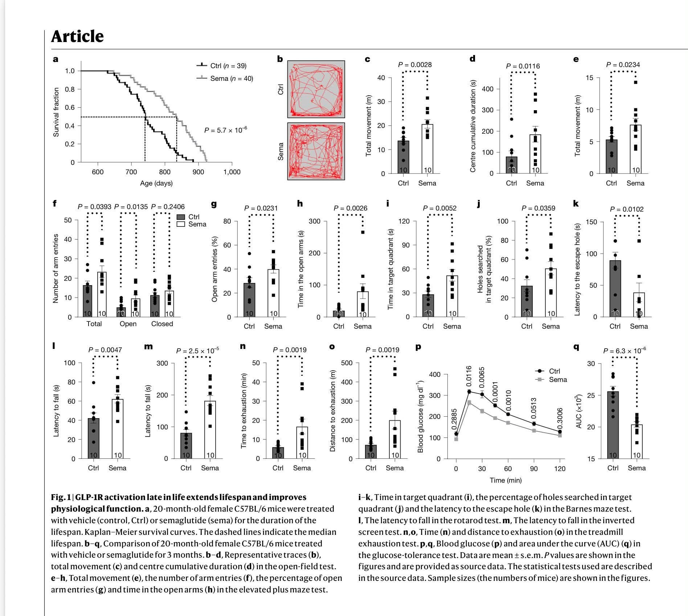
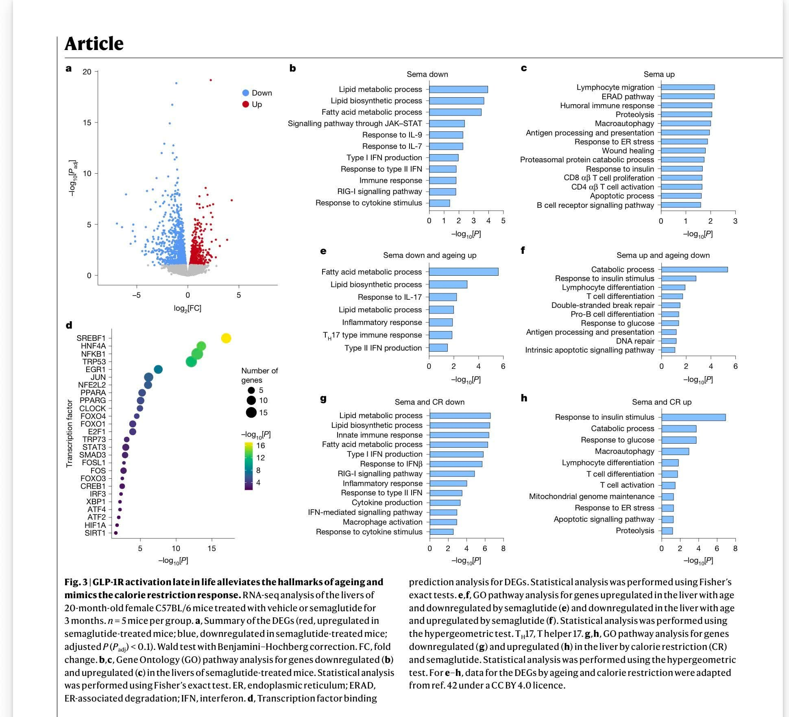
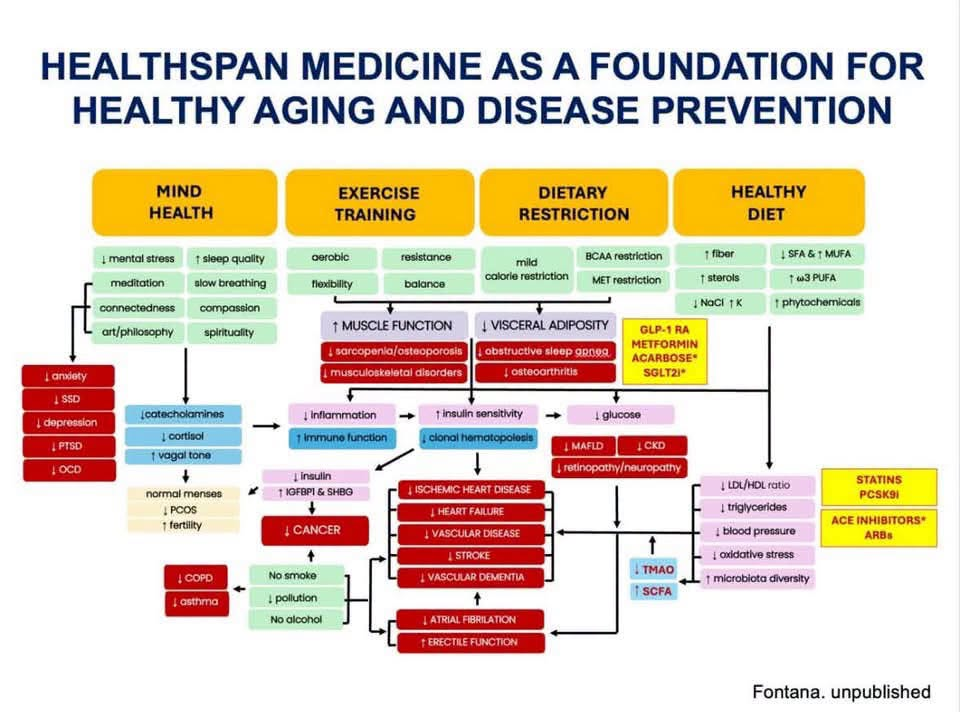

Semaglutide extended average lifespan of female mice by 12%, even when started late in life (20 months).
This would be the equivalent of starting in a human at 70yo, and adding 10 extra years.
Calorie intake dropped by 24%, so it is likely that much of the benefit came from the calorie restriction.
#semaglutideHD #glp1HD #calorierestrictionHD #fastingHD #agingHD #longevityHD #miceHD
Imagine starting a treatment at around age 70 and shifting median survival from roughly 85 to 95 years.
That is approximately the scale of what happened, in proportional terms, in a new Nature study.
Paper · Nature · 2026Late-life semaglutide treatment slows ageing and extends lifespan in female micePharmacological glucagon-like peptide-1 receptor (GLP-1R) activation reduces food intake and is an effective therapy for type 2 diabetes and obesity 1 . The use of GLP-1 medicines has revealed pleiotropic beneficial effects beyond glucose and weight control 2–5 , but little is known about the underlying basis of the pleiotropic effects. Here, treatment of 20-month-old female C57BL/6 mice with the GLP-1R agonist…doi.org
Researchers started semaglutide in 20-month-old female mice, already late in life. Food intake fell by about 24%, and median lifespan increased from 742 to 834 days, about 12%. Because treatment began so late, remaining median lifespan increased by roughly 70%.
What is especially interesting is that these mice did not follow the usual calorie-restriction pattern of eating quickly and then fasting for many hours. They ate less, but more gradually across the day. Yet they still lived longer.
This suggests that, at least in this model, prolonged daily fasting is not necessary for lifespan extension. Chronic energy intake itself appears to matter enormously.
The effects also extended beyond body weight, with improvements in physical function, glucose control, spatial memory, inflammation, cellular senescence, mitochondrial function and markers of neurogenesis.
But humans are not laboratory mice. These animals live in highly controlled conditions, with standardized nutritionally adequate food and far less exposure to infections, trauma and the many environmental and behavioural factors that shape human ageing.
So this is not evidence that semaglutide will add 10 years to human life.
For humans, diet quality, exercise, smoking, alcohol, sleep and metabolic health remain fundamental.
But the biological message is important:
how much energy we chronically consume is likely to be one of the major determinants of longevity.



